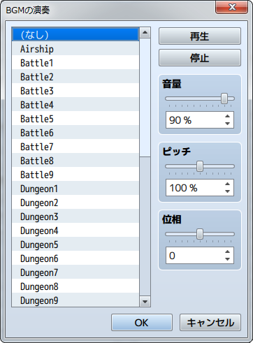

その他
イベント検索
ツールにイベント検索機能が追加されました。
詳細は［補助ツールの使い方］の項目を参照してください。
オーディオ設定に［位相］を追加
BGMやBGS、SEなどのオーディオ設定に位相が追加されました。
スピーカーの左右のバランスが調整可能です。

ツールにイベント検索機能が追加されました。
詳細は［補助ツールの使い方］の項目を参照してください。
BGMやBGS、SEなどのオーディオ設定に位相が追加されました。
スピーカーの左右のバランスが調整可能です。